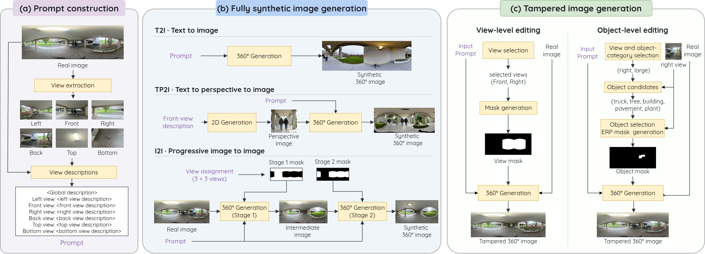
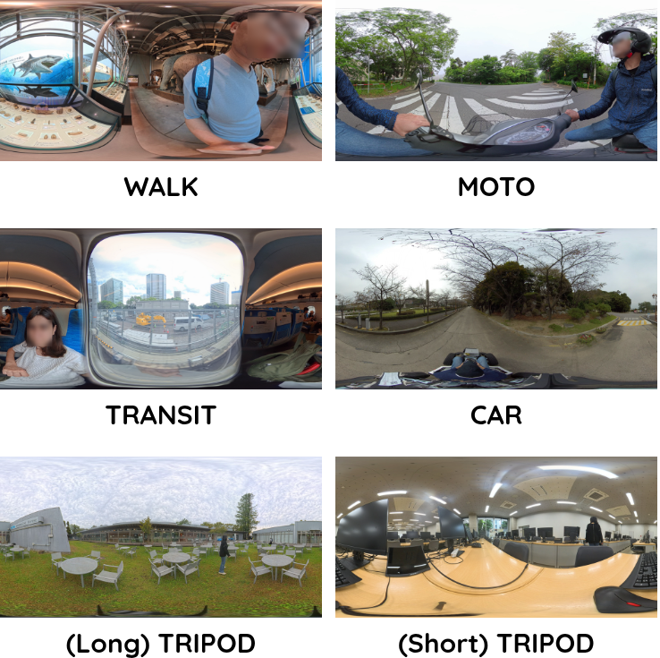
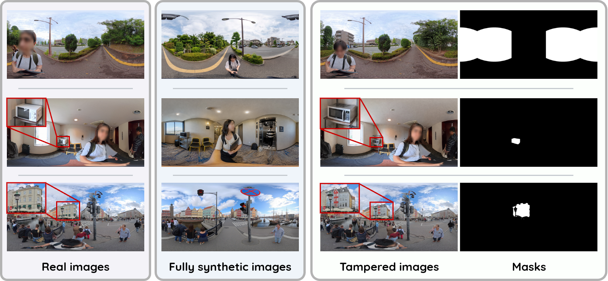
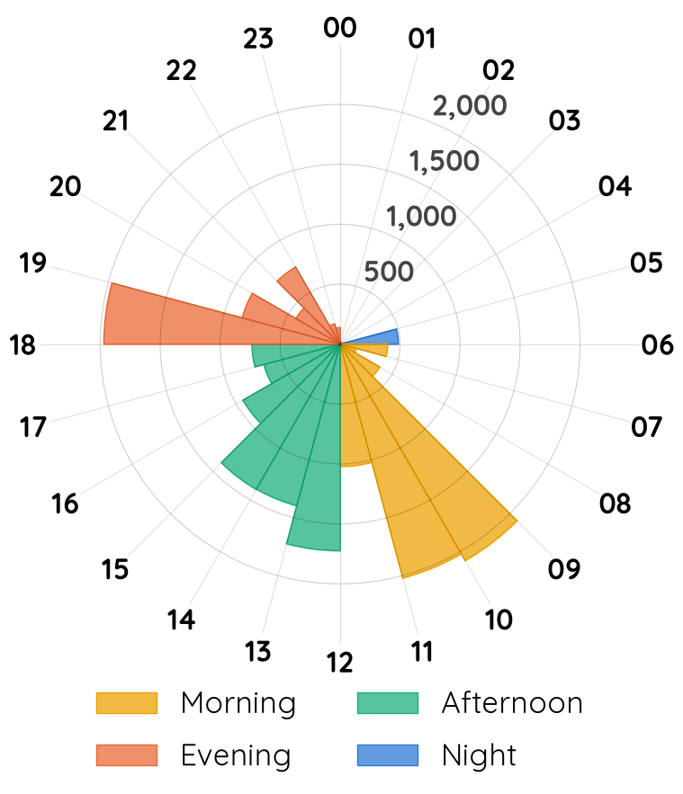
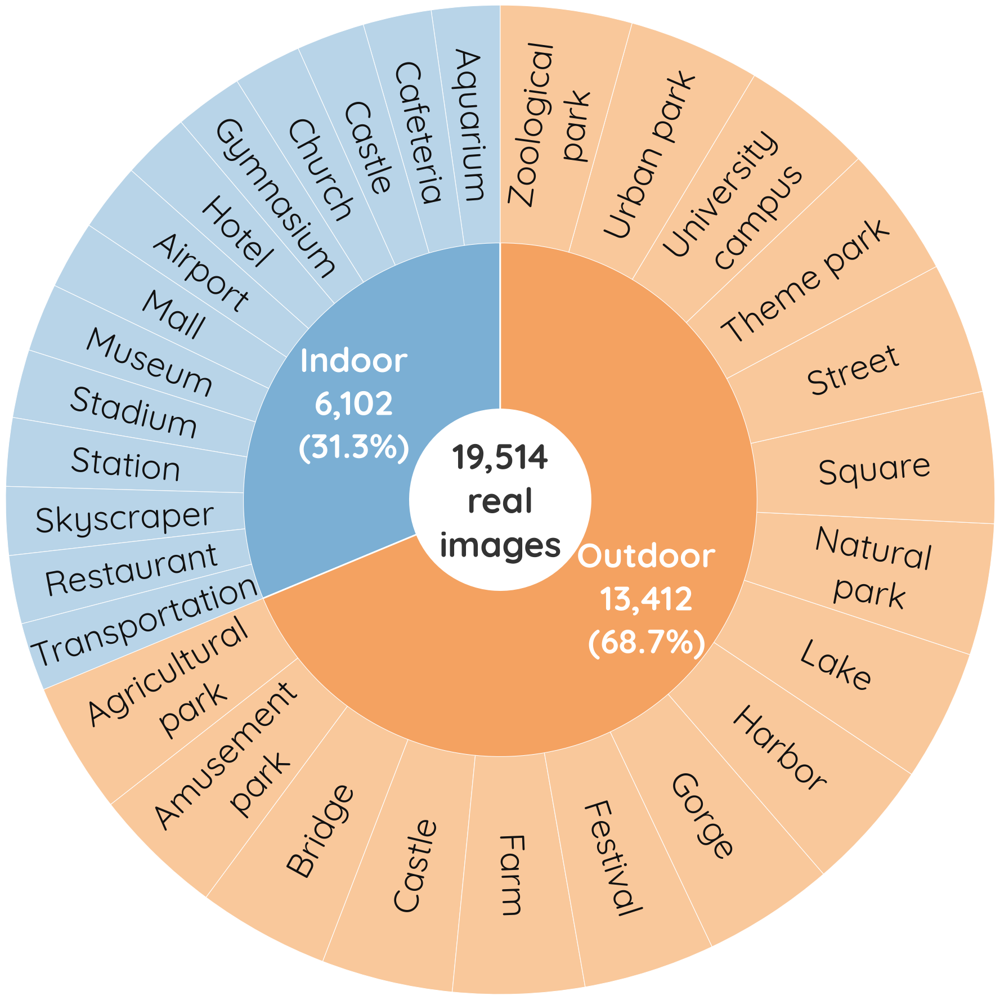

In this project, we introduce Fake360, the first benchmark designed to evaluate the performance of existing models in detecting and localizing fake 360° images.





@article{360BenchFree360,
title={Fake360: Benchmarking Fake Image Detection and Localization in 360° Images},
author={Huyen T. T. Tran, Nguyen Ha Ngoc Linh, Golsa Tabe Jamaat, Van-Quang Nguyen, Duc V. Nguyen, Farros Alferro, Puth Srey Neath Pich, Yusuke Hosoya, Takayuki Okatani},
year={2026}
}